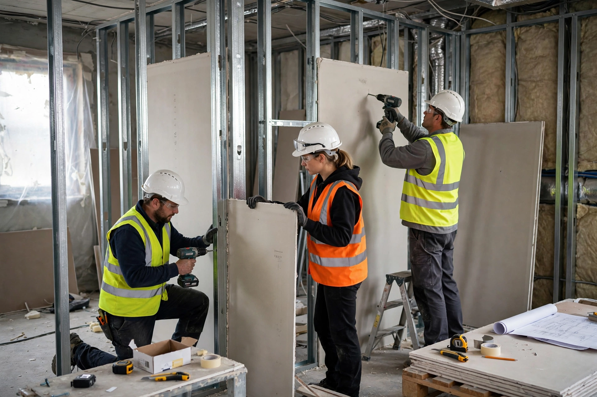

Drywall
From Wikipedia, the free encyclopedia

Drywall (also plasterboard, gypsum board, wallboard or by the genericised trademark Sheetrock) is a panel of calcium sulfate dihydrate (Gypsum) sandwiched between paper facings, used to build interior walls and ceilings quickly and without the water of wet plaster — hence 'dry'. Invented in its modern form by Augustine Sackett (1894) and industrialised by the US Gypsum Company, it became the default interior surface of North American construction after the Second World War.
Properties and types
Standard half-inch board is cheap, cuttable with a knife and screw-gunned to studs; fire-resistant Type X (glass-fibre reinforced core), moisture-resistant 'green board' and cement boards serve special duties, and plasterboard assemblies deliver rated fire separation between dwellings. Its weaknesses — impact damage, water sensitivity and mould — and its disposal (gypsum in landfill can generate hydrogen sulfide) drive recycling and alternative systems.
History and the Chinese drywall affair
Drywall displaced lath-and-plaster for speed and cost in the post-war housing boom. In the 2000s, defective imported Chinese drywall — emitting sulfurous gases that corroded wiring and sickened occupants in thousands of US homes — produced mass litigation and a lasting cautionary tale about building-material supply chains.